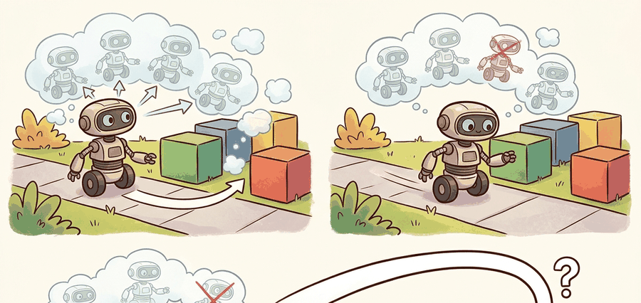

A predicted future matters only when it changes the next command before the robot spends it.

Figure 36.5A: Planning with predicted futures is receding-horizon decision-making: simulate, score, execute one action, observe again, and repeat.
A Horizon-Aware Predictor
Big Picture
Predicted futures become operational when a planner uses them to score candidate action sequences. The core question is not whether a model can imagine many futures, but whether the chosen future ranking yields safer or more effective behavior under a real timing budget.
Reader Pathway
Follow the loop: generate candidate actions, roll them forward, score task cost and risk, execute one action, then replan. Every failure in predictive planning can be traced to one of those interfaces.
Key Insight
Planners rarely need perfect rollouts. They need enough predictive fidelity to rank action sequences correctly before the next control deadline.
From Prediction To Planning
Suppose the model predicts $\hat s_{t+k+1} = \hat f(\hat s_{t+k}, a_{t+k})$. A receding-horizon planner chooses an action sequence by solving
where $c$ is task cost and $\rho$ may encode risk, uncertainty, or terminal penalties. The robot executes only the first action, then replans from the next observation. That is why model-based planning can survive imperfect models: it corrects after every real step.
What makes this work in embodied systems is interface discipline. The state representation used by the planner must match the state the predictive model expects. The cost function must penalize the physical quantities that actually matter, such as clearance, contact force, or center-of-mass margin, rather than only geometric distance to goal. The optimizer must also finish before the next control deadline. If any one of those contracts is broken, predictive planning can fail even with a seemingly accurate model.
Control Relevance
A planning model should be judged by sequence ranking quality. If it cannot correctly rank which action sequence is safer or cheaper, prettier predictions do not help.
Worked Probe
The compact probe below scores three short action sequences under a simple rollout model. The exact optimizer is unimportant here. What matters is how the score combines task error with safety margin.
# Score candidate action sequences with a tiny predictive planner.
goal = 1.0
obstacle = 0.82
dt = 0.2
sequences = {
"aggressive": [0.20, 0.20, 0.20],
"balanced": [0.16, 0.16, 0.16],
"cautious": [0.12, 0.12, 0.12],
}
scores = {}
for name, actions in sequences.items():
x = 0.0
penalty = 0.0
for u in actions:
x += u * dt
if obstacle - x < 0.12:
penalty += 5.0
scores[name] = round((goal - x) ** 2 + penalty, 3)
best = min(scores, key=scores.get)
print({"scores": scores, "best_sequence": best})
Read the multi-step prediction table as a compounding-error diagnostic. The controller decision that follows is whether to replan more frequently, use a shorter horizon, or constrain actions that push the model outside its training support.
Code Fragment 36.5.1: The balanced sequence wins because it reaches the goal region without paying the obstacle penalty. The planner is learning a ranking, not merely a forward simulation.
Library Shortcut
Use mujoco_mpc when you need real-time predictive sampling or derivative-based planners in a physics loop. Use OMPL or Drake if the planning problem also needs geometric constraints, kinematics, or contact-aware optimization around the learned model. Use your own short code probes first so cost terms and constraint semantics stay transparent before the framework hides them behind configuration files.
What To Log In A Real Planner
A serious predictive planner saves more than the chosen sequence. For each control tick, log the best sequence cost, the runner-up cost, planner latency, the uncertainty summary over the winning rollout, and the real outcome of the executed first action. This lets you separate four distinct failure modes: the model predicted the wrong future, the optimizer failed to find the good sequence, the safety term was weighted badly, or the controller simply acted on stale information.
These traces become especially important when comparing planner families. A CEM planner and an MPPI planner can land on similar average returns while making very different mistakes. One may mis-rank narrow-passage maneuvers; the other may be stable but too conservative. The book's evidence standard should therefore treat sequence-ranking artifacts and latency logs as part of the method, not as optional debugging leftovers.
Pseudo-Algorithm
At each control step: encode the current state, sample or optimize action sequences, roll them through the model, score task and risk, execute only the first action of the best sequence, then repeat with the next real observation.
Warning
Planning can fail even when the predictive model looks decent offline. Sequence ranking is sensitive to cost design, constraint softening, optimizer variance, and stale observations. Always inspect bad rollouts, not just aggregate cost curves.
Practical Example
An autonomous forklift choosing whether to brake or continue through a narrow aisle needs only short-horizon future occupancy and stopping-distance forecasts. A humanoid stepping stone to stone may need predicted center-of-mass and contact futures to reject action sequences that look good on position error alone but become dynamically unstable.
Cross-References
This section leads directly into the planner families in Section 37.3 and depends on the control-cost framing in Chapter 7.
Research Frontier
Practical planning systems increasingly blend learned and analytical structure: learned residual costs, learned value tails, physics-based rollouts, and uncertainty-aware rejection rules. The frontier is not pure imagination, but reliable ranking under tight clock budgets.
Self Check
If your predictive planner chooses worse actions than a reactive baseline, which artifact would you inspect first: one-step error, sequence ranking, uncertainty calibration, or controller latency? Why?
Memory Hook
The planner does not need the perfect future. It needs a future ranking good enough to pick a better first move now.
Key Takeaway
Planning with predicted futures is about sequence ranking under receding horizon. Forecast quality matters only insofar as it changes action choice and improves matched closed-loop metrics.
Exercise
Sketch a receding-horizon controller for a drone, car, or manipulator. What is rolled out, what is scored, what safety term is added, and what artifact would prove the planner helped?